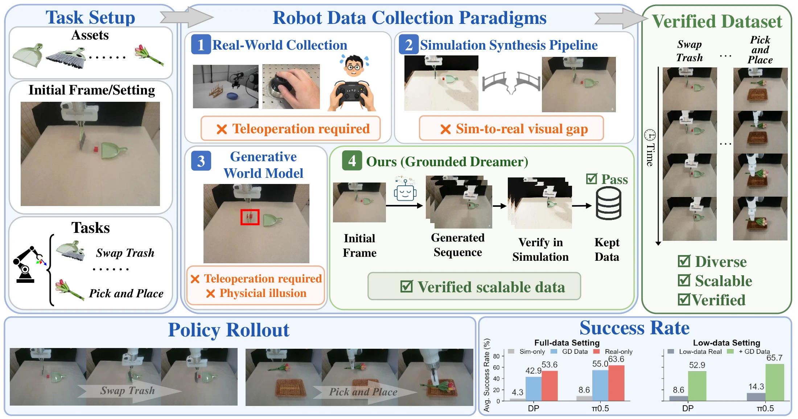
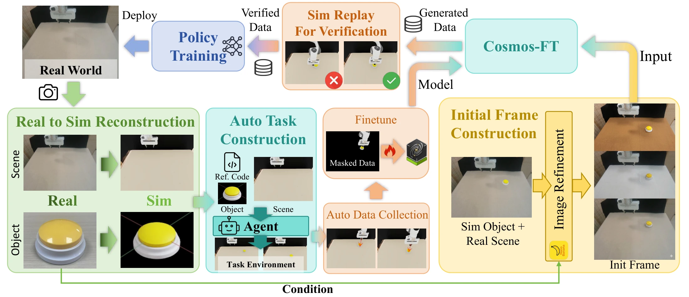
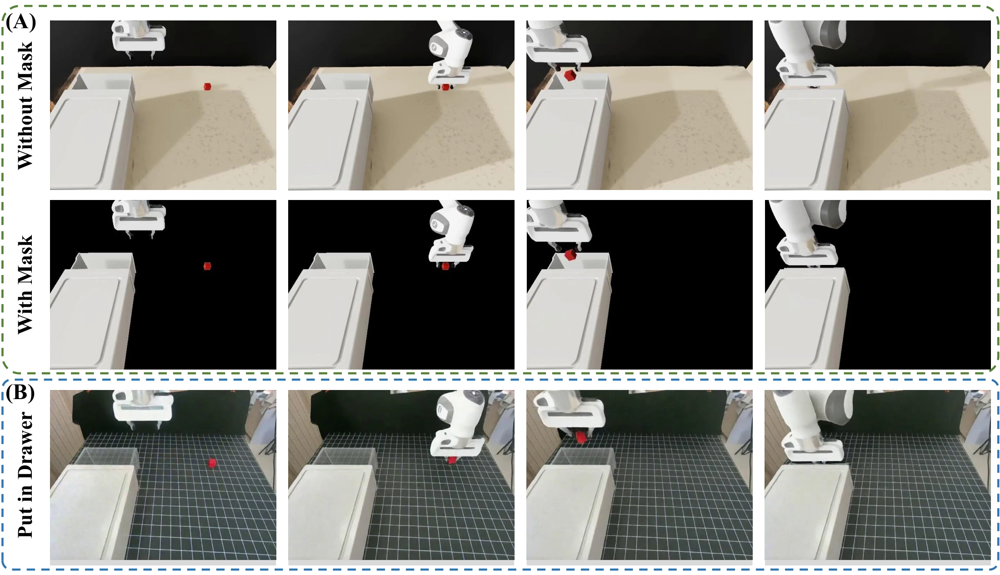
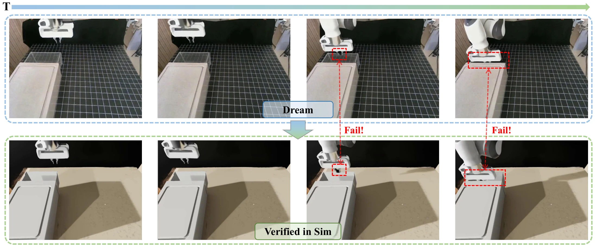
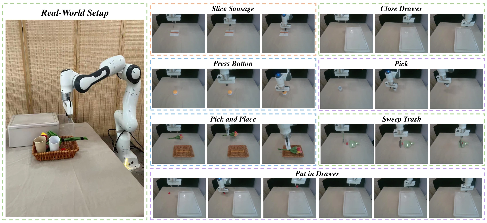
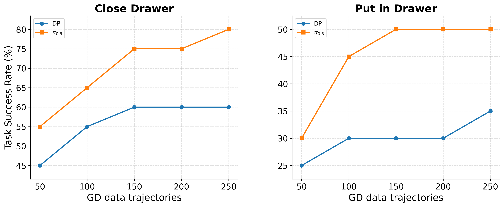

WORLD MODELS · ROBOT LEARNING
Grounded-Dreamer
Robot Learning from World Model Synthetic Data
with Physical Grounding
* Equal contribution † Corresponding author: wuruihai@pku.edu.cn
Learn from imagined trajectories.
Ground them in physics.

Abstract
Scaling robot manipulation policies requires large amounts of diverse, action-labeled data, yet collecting such data in the real world remains expensive and difficult to scale. Existing methods either depend on human teleoperation, rely on simulation with limited visual realism, or use human videos that lack embodiment-specific annotations. In this paper, we introduce Grounded-Dreamer, a framework for synthesizing physically grounded robot manipulation data with video world models while avoiding human teleoperation demonstrations. Grounded-Dreamer combines the visual realism of generative video models with simulator physics engines. Starting from a small set of real images depicting robot task initial states, our method automatically reconstructs task-relevant objects and camera geometry, aligns them in simulation, and collects physically valid trajectories. These trajectories are used to post-train both a video world model and an inverse dynamics model, enabling the generation of visually realistic robot manipulation videos and corresponding robot actions from real images. To filter physically implausible rollouts, Grounded-Dreamer replays generated trajectories in the reconstructed simulation and retains only those that successfully complete the tasks. The real-world robot policies are trained solely on the grounded synthetic trajectories without any human demonstrations. Empirical results in real-world tasks demonstrate that Grounded-Dreamer can synthesize physically grounded data and substantially facilitate policy learning without requiring human teleoperation effort.
The Grounded-Dreamer pipeline
Visual realism from a world model. Physical validation from a simulator. A scalable source of action-labeled robot data.

Build the physical scene
Reconstruct task-relevant objects and camera geometry from real reference images. Collect physically valid task trajectories in the aligned simulation.
Imagine diverse trajectories
Fine-tune Cosmos-Predict 2.5 with interaction-aware masking. Augment initial frames and predict robot actions with an inverse dynamics model.
Replay before learning
Execute generated actions in simulation and filter by task success. Train robot policies on the retained synthetic trajectories.
From simulation to realistic robot data
Interaction-aware masking preserves task-relevant motion while allowing the world model to synthesize realistic surroundings.

Looking successful is not enough
A generated video can depict success even when its predicted actions fail. Replaying actions in a reconstructed scene exposes these physical inconsistencies.

Video demonstrations
World-model-generated trajectories grouped by simulation replay outcome, followed by real-robot executions.
Successful replays
World-model-generated trajectories that passed replay validation.
Failed replays
World-model-generated trajectories that failed replay validation.
Real-robot executions
Trajectories executed on the real robot.
Learning for the real world
Evaluated on seven manipulation tasks with a Franka Emika arm, using Diffusion Policy and π0.5.

Main results
Policies trained only on verified Grounded-Dreamer data substantially improve over raw simulation data. On Press Button, π0.5 trained on GD data matches the real-data baseline at 75% success.
| Training data / method | Pick | Button | Close drawer | Pick & place | Sweep trash | Slice sausage | Put in drawer | Average |
|---|---|---|---|---|---|---|---|---|
| Sim-only | 10% | 15% | 15% | 5% | 10% | 5% | 0% | 8.6% |
| Real-only | 65% | 75% | 65% | 60% | 60% | 75% | 45% | 63.6% |
| GD data (ours) | 55% | 75% | 55% | 50% | 60% | 60% | 30% | 55.0% |
| Low-data Real | 20% | 20% | 10% | 15% | 20% | 10% | 5% | 14.3% |
| Co-training | 70% | 80% | 65% | 55% | 75% | 70% | 45% | 65.7% |
| RIGVid | 25% | 20% | 5% | 5% | 0% | 0% | 0% | 7.9% |
| Training data / method | Pick | Button | Close drawer | Pick & place | Sweep trash | Slice sausage | Put in drawer | Average |
|---|---|---|---|---|---|---|---|---|
| Sim-only | 10% | 10% | 0% | 5% | 5% | 0% | 0% | 4.3% |
| Real-only | 50% | 60% | 60% | 50% | 50% | 70% | 35% | 53.6% |
| GD data (ours) | 45% | 50% | 45% | 35% | 45% | 55% | 25% | 42.9% |
| Low-data Real | 10% | 10% | 15% | 0% | 10% | 10% | 5% | 8.6% |
| Co-training | 55% | 65% | 50% | 45% | 55% | 60% | 40% | 52.9% |
| RIGVid | 25% | 20% | 5% | 5% | 0% | 0% | 0% | 7.9% |
Success rates from paper Table 1; 20 trials per task. Average is the unweighted mean across all seven tasks, rounded to one decimal place. Real-only uses 50 real trajectories; Low-data Real uses 5; Co-training combines 5 real trajectories with 50 GD trajectories. RIGVid is a separate baseline and is repeated for comparison.
Generalization to new environments
Augmenting initial frames varies backgrounds, textures, and lighting. Verified world-model data improves success across all seven tasks in the evaluated out-of-distribution settings.
| Training data / method | Pick | Button | Close drawer | Pick & place | Sweep trash | Slice sausage | Put in drawer |
|---|---|---|---|---|---|---|---|
| Real-only | 25% | 20% | 10% | 20% | 20% | 15% | 5% |
| Verified GD data | 45% | 60% | 55% | 40% | 60% | 50% | 30% |
| Training data / method | Pick | Button | Close drawer | Pick & place | Sweep trash | Slice sausage | Put in drawer |
|---|---|---|---|---|---|---|---|
| Real-only | 10% | 5% | 5% | 0% | 5% | 5% | 0% |
| Verified GD data | 40% | 50% | 35% | 30% | 40% | 45% | 15% |
Success rates from paper Table 2; 20 trials per task. The policy selector above updates both result tables.
Scaling synthetic training data

Citation
If you find this work useful, please cite our paper.
@misc{jiang2026groundeddreamer,
title={Grounded-Dreamer: Robot Learning from World Model Synthetic Data with Physical Grounding},
author={Feng Jiang and Shu Chen and Yuanfei Wang and Yuan Li and Zhenhao Shen and Jiaqi Liang and Yang Chen and Lei Wei and Chen Xie and Ruihai Wu},
year={2026},
url={https://fffstrong.github.io/Grounded-Dreamer/}
}